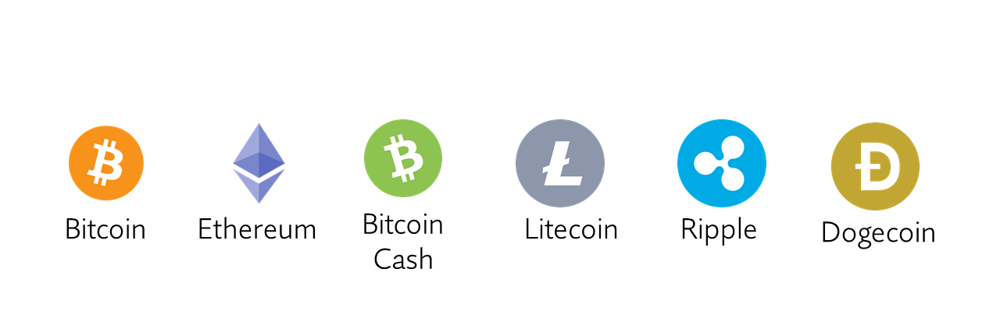

WHAT ARE CRYPTOCURRENCIES?
They are virtual currencies that use strong cryptography to secure your transactions, control the creation of additional units and verify the transfer of assets using distributed logging technologies. ​
Cryptocurrencies are a type of alternative currency and digital currency.
The transactions and records of each currency work using a decentralized database, called blockchain, which serves as a public financial transaction database or trading logbook.
The first cryptocurrency that became known on the market was Bitcoin in 2009, since then other cryptocurrencies have been created such as Litecoin, Ethereum, Bitcoin Cash, Ripple, Dogecoin to name the main ones.

BENEFITS OF CRYPTOCURRENCIES
- It is decentralized; The physical money we know is regulated by the government of each country, they establish the exchange rate for the purchase and sale of each currency, generating that some countries have economic advantage in the value of their currency compared to other countries. With cryptocurrencies the value is determined by the community that uses them based on the supply and demand of the global market.
- Cannot be counterfeited; because it uses mathematical encryption and blockchain called Blockchain.
- Transactions are instant and low cost; usually when we want to send dinero, we lose a percentage in commissions either by using the service in the bank or by the exchange rate we are set, when we make a cryptocurrency transaction specific to bitcoin, the transfer is immediate and with a minimum percentage of service regardless of where you send.
- They are safe and reliable; every transaction made with cryptocurrencies is recorded on the network and is in the public domain, anyone can, see the transaction, but the identity of the person who made it and who was made, thus guaranteeing privacy to users is not published, in addition your Bitcoin account cannot be frozen or canceled as sometimes happens with banks.